Hatching Ducklings & Chicks

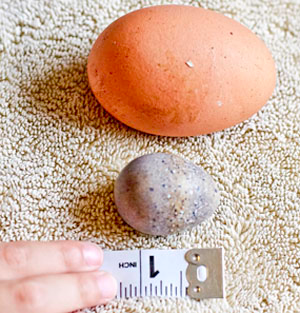 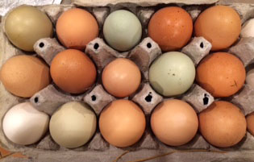 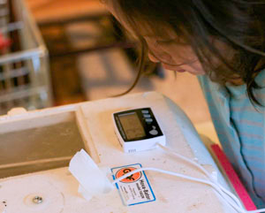 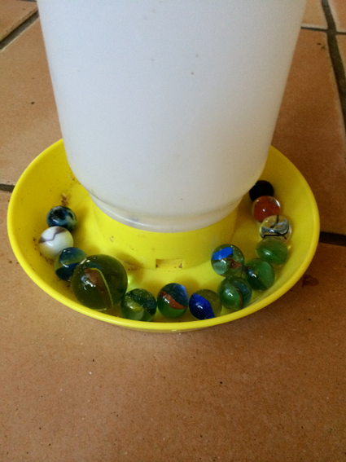 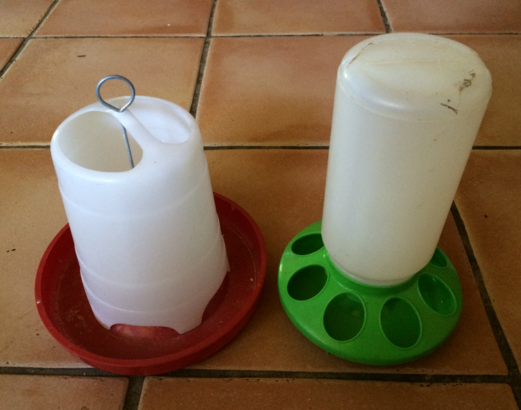 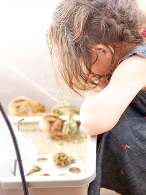 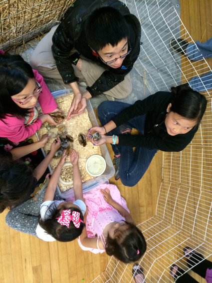 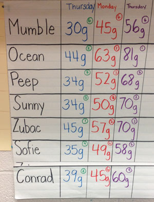 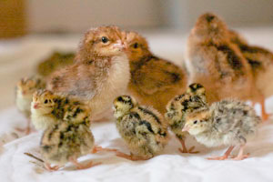 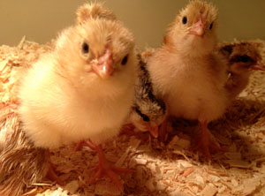 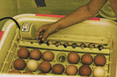 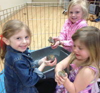 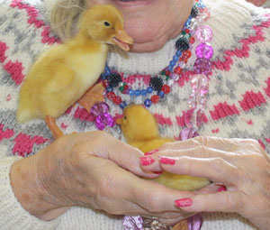 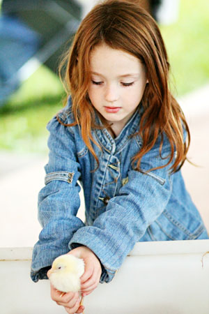 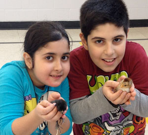 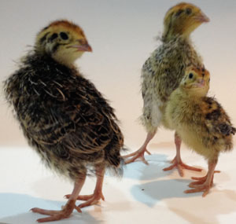 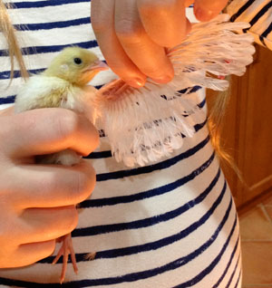 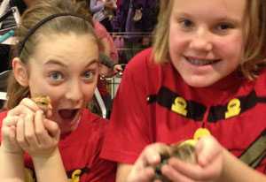. 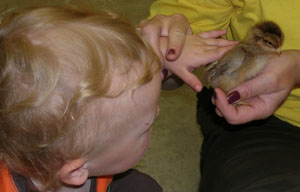 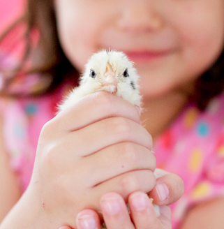 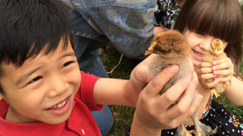 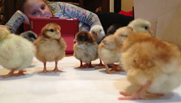 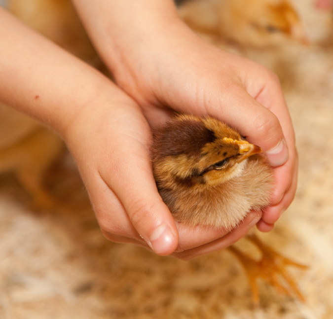 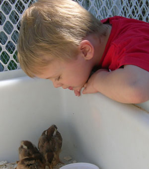
|
COVID 2020 Schools are open, home distance-learning continues and homeschooling parents are looking for programs to supplement their curriculum. Senior homes & retirement residences are missing programs due to limited access. 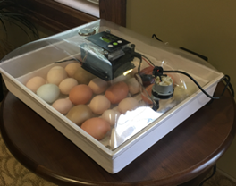 Our incubatorsare being rented by teachers and parents to allow kiddos to experience hatching of eggs right before their eyes! Retirement residences can book a Covid-friendly drop-off for a complete kit. Travel services for delivery and pick up are available at a rate of $1.15 per km plus applicable tolls and taxes for each trip. Please email for precise treavel pricing. All clients are welcome come to our farm in Lakehurst to pick up and return the kits at no additional fees from the base kit price. We have strict protocols in place to keep you and our farm healthy (by appointment only). No matter where you are in Ontario - we are right there with our virtual support. Needing a special, personal "eggs-perience"? Woolley Wonderland Farm is happy to help time a clutch of eggs to hatch for a birthday or other milestone. It's a super way to provide egg-citement when parties just can't happen like before. WHO CAN HATCH? Schools, Families, Senior Homes, Community Groups You won't feel alone through the process. Clients love that we are an email, text or call away as they hatch their first eggs. We have YouTube links to walk you through the set-up as well as a custom manual to guide you along the hatching path. 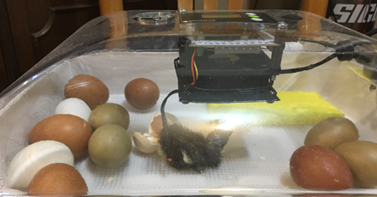 Your kit contains: up to 22 hatching eggs, computer-controlled IncuView incubator (featuring a clear, domed lid) with automatic turner, humidity & temperature meters, food dish, water dish, vitamin supplement, heat lamp and bulb, tote/brooder box (for after the hatch), bedding (shavings) and customized manual. Raise the chicks or ducks for about 10 days before the kit and babies are due back at the farm. Our breeds are heritage and show birds - high in demand by other breeders, farmers and backyard chicken lovers. We guarantee every hatch will produce chicks, ducks, geese, guinea keets or peacocks using our complete kits. Some schools and school boardshave their own incubators. We can support you with a kit that includes: up to 2 dozen hatching eggs, chick starter food, vitamin supplement, food and water dishes, shavings, heat lamp and a brooder box. Book online with travel surcharges additional if required. Fees Complete kits: Chick Eggs @ $120, Duck Eggs @ $200 NEW for 2021 (kits with seasonal availability): Goose Eggs @ $200, Guinea Eggs: $175 Peacock Eggs: $50 for kit plus $75 per egg (4 egg minimum). A travel surcharge will apply for delivery and return pick-up. Clients may pick up and return to the farm with no additional fees. HST will be added to your total. NOTE: All eggs may not hatch. We'll do our best to guide you through the process including candling to remove most infertile eggs close to the hatch date to minimize disappointment during the final hatch days. Our instruction guide includes information on steps to hatching, how the incubator works, illustrations on candling eggs and what to expect to see. YOU will have a specific timeline from eggs-in on day-one to hatching and brooding your chicks. INCUBATORS book out back to back for hatches from Easter to June. Please select your dates and know that full payment is due to secure your booking.
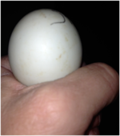
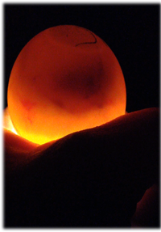
Candling is easy to discover which eggs are viable. You can see the "spider web" at 5 days by beaming the light from your smart phone through the shell. You may also be able to see the heart beating through the shell of a viable egg at day 8. All participants get an "I Hatched a Chick" or "I Hatched a Duck" collector card. 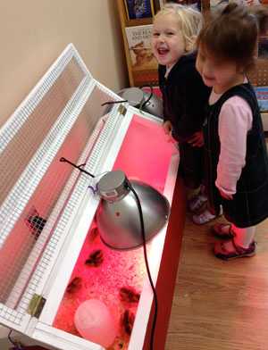 Book online to reserve today. |
| Copyright - Critter Visits & Woolley Wonderland Farm 2015 - 2016 | |
© Critter Visits of Woolley Wonderland Farm Inc. 2020